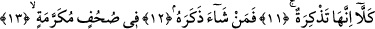
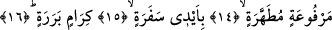

HAYIR!
ÖYLE YAPMA
11. Hayır! O bir öğüttür.
12. Dileyen ondan (Kur’an’dan) öğüt alır.
13. Şüphesiz bunlar (âyetler), mukaddes sahifelerde (yazılı) bir öğüttür;
14. Tertemiz kılınmış, yüce makamlara kaldırılmış
15. Kâtiplerin elleriyle (yazılıp)
16. Değerli ve güvenilir
“Hayır!” Öyle yapma. Kendini muhtaç görmeyene yönelmekten ve irşad talebinde
bulunanı irşad etmeyi bırakmaktan sakın.
Hasan der ki: Cebrâil bu âyetleri Peygamberimiz (s.a.)’e okuduğunda
Peygamberimiz’in yüzü -Allah’ın hakkında vereceği hükmü bekleyerek- kül gibi oldu.
Sanki yüzüne kül serpilmiş gibi rengi uçtu gitti. Sonra âyetin devamında “kellâ/hayır”
buyurulunca yüzü açıldı ve sevindi. Bu açıklamaların ışığı altında âyet-i kerime şu
mânâya gelmektedir: “Bu çeşit davranışı yapma. Çünkü bu sana yakışmaz.”
“Şüphesiz bunlar (âyetler)” Allah’a yakın ve şerefli oldukları için “değerli”;
maddeden uzak ve ana cevherleri herhangi bir şeye bağlanmaktan münezzeh oldukları
için “güvenilir” melek “kâtiplerin elleriyle (yazılıp)” şeytanların ellerinin
değmesinden uzak ve “tertemiz kılınmış” yedinci semâda “yüce makamlara
kaldırılmış” veya değeri ve zikri yüceltilmiş, Kur’an sahifeleridir. Bundan dolayı bu
âyetler, Allah’ın katında değeri yüce “mukaddes sahifelerde (yazılı)”, öğüt alınması ve
gereğine göre amel edilmesi gereken “bir öğüttür. Dileyen ondan” yâni Kur’an’dan
“öğüt alır.” Onu ezberler ve unutmaz. Veya o Kur’an’dan ibret alır. Kim bu Kur’an’dan
-yukarda kendini muhtaç görmeyen kimsenin yaptığı gibi- yüz çevirirse onun durumuyla
ilgilenmeye, ona özen göstermeye hiç de gerek yoktur.
13. âyette yer alan “suhuf”, “sahife” kelimesinin çoğuludur. Araplar nezdinde yazılı
olan her nesneye “sahife” denilmiştir. Buradaki “fi suhufin” ifâdesi gizli bir kelime ile
ilişkili olup “tezkira” kelimesinin sıfatıdır. “Tezkira” kelimesiyle “fi suhufin” kelimesi
arasında kalan “femen şâe zekereh/dileyen ondan öğüt alır” cümlesi mu’teriza/parentez
cümlesi olup sıfatla o sıfatı alan kelime arasına girmiştir. “Dileyen ondan öğüt alır”
cümlesinin böyle araya girmesi, Kur’an’dan öğüt alınması ve onun ezberlenmesi
noktasında ifâdeye teşvik anlamı katmak içindir. Bu açıklamaların ışığında âyetin bu